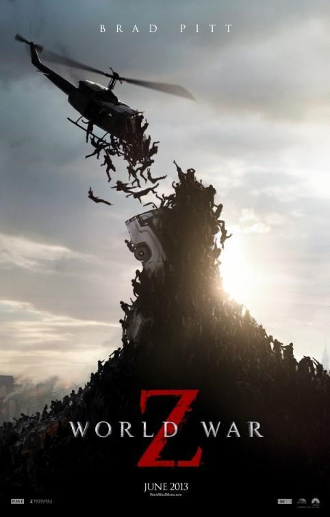

Guerra Mundial Z
Cuando una pandemia de zombis amenaza con destruir a la humanidad, un exinvestigador de Naciones Unidas es obligado a regresar al servicio para intentar descubrir la fuente de la infección.
2013 - 1hs 56min
¿Dónde Ver?
Actualmente, esta película está disponible en las plataformas: